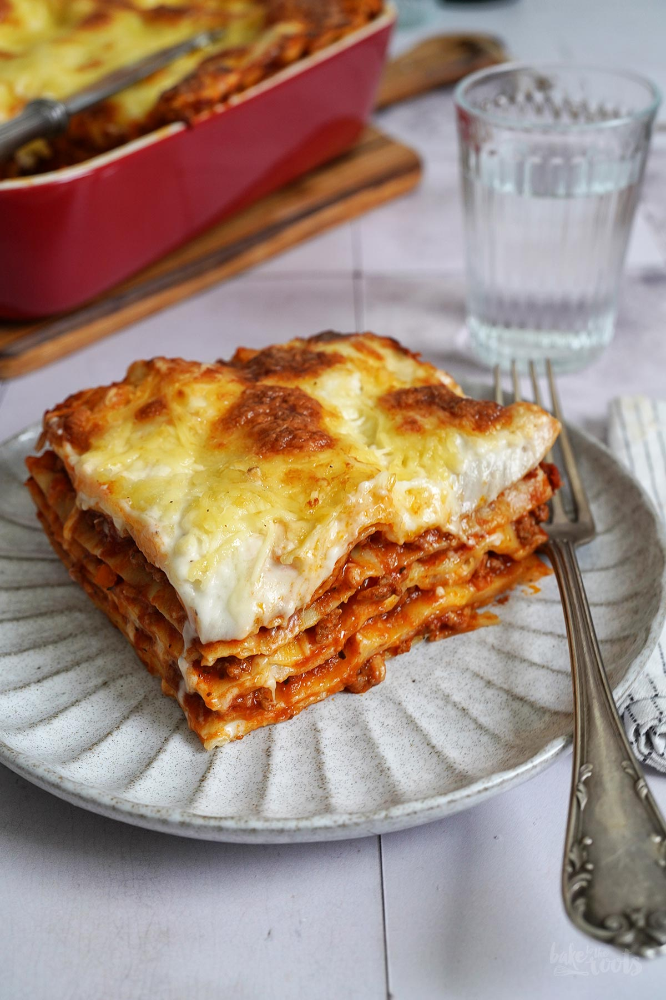

Recette des lasagnes

Ingrédients pour 8 personnes
- 1 paquet de lasagne
- 600g boeuf
- 1 carotte
- 800g tomates
- sel
- poivre
- Béchamel
Préparation
- Préparer la bolognaise
- Préparer les étages des lasagnes en alternant les feuilles de lasagnes avec un mélange bolognaise et béchamel
- Enfourner
Accueil